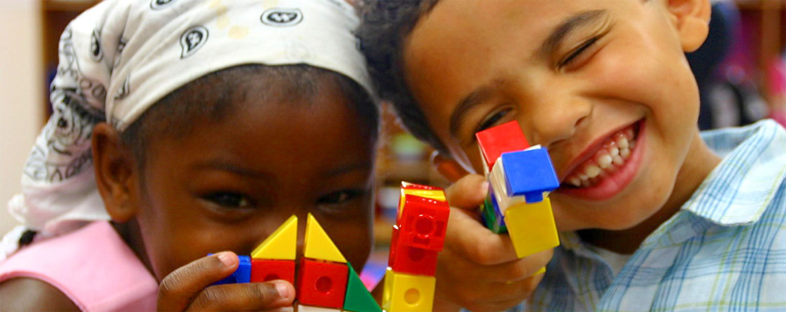

Proyecto Caritas Felices
Realizado por FIUDESCO con ayuda de Centro Educativo Gallineta
Niños de Colegios Rurales
Con el apoyo a estos programas sociales en las zonas más apartadas de los municipios de Colombia se pretende establecer e instalar una cultura en los niños, niñas y jóvenes relacionada con la ciencia, tecnología e innovación, fortalecer los procesos sociales y comunitarios. Mediante la implementación del Proyecto de “Caritas Felices Campesinas” los niños, niñas y jóvenes rurales tienen la oportunidad de participar en escenarios académicos, científicos, ambientales y sociales a otros municipios y ciudades capitales de Colombia, participando como ponentes y asistentes mediante temáticas propias de sus experiencias de vida, desarrolladas en su ámbito natural: “el Campo”.
Esta estrategia social inicia como estrategia de inclusión y participación de los actores rurales en escenarios académicos, científicos, ambientales y sociales de Colombia desde hace aproximadamente cinco años.
Por ejemplo, en el año 2010, participamos en la XVIII Convención Científica Nacional, organizado por La Asociación Colombiana del Avance y la Ciencia –ACAC en la ciudad de Medellín, con la presencia de jóvenes estudiantes rurales del Departamento del Caquetá, Colombia; evento académico que sirvió de plataforma para socializar diferentes experiencias académicas y pedagógicas del orden académico.
Diferentes grupos juveniles escolares rurales nacionales participaron también en el evento denominado EXPOCIENCIA INFANTIL EXPOTECNOLOGIA EN LA CIUDAD DE BOGOTA D.C. EN EL AÑO 2011. En este espacio se presentaron y socializaron diferentes experiencias didácticas y pedagógicas, resultado de las prácticas académicas desarrolladas y compiladas durante varios años mediante estrategias de educación flexibles, incorporadas y aplicadas en las Instituciones Educativas Rurales de Colombia mediante modelos como Escuela Nueva (ENEA), Posprimaria Integral y Diferencial (PID), Desarrollo Profesional Situado (DPS) y otras, algunas de ellas propuestas por el Ministerio de Educación Nacional.
Buscamos que en los niños, niñas y jóvenes rurales de Colombia se cree un ambiente adecuado que permita la movilización cultural, social y académica, el afianzamiento de la ciencia, la tecnología, la investigación, los valores y la adquisición de competencias argumentativas y ciudadanas que contribuyan a la formación integral de estos actores rurales como proyecto de vida para él; un desempeño adecuado en su entorno rural con la adquisición de habilidades y competencias laborales, de tal manera que aporte a mejorar su calidad de vida y de su comunidad.
En los años siguientes, continuamos con el trabajo social participando en esta misma línea de acción con grupos de estudiantes de Instituciones Educativas Rurales mediante la asistencia al Congreso de la República y a la XIX Convención Científica Nacional en el año 2012, en donde se organiza actividades académicas, de ciencia y tecnología, visitas a sitios culturales e históricos de la ciudad de BOGOTÁ D.C.
Mediante el programa ofrecido por el Senado de la Republica “Jornada de Puertas Abiertas del Congreso de la República” los niños, niñas y jóvenes fueron testigos directos durante la Visita Guiada al Congreso de la República-Capitolio Nacional, mediante este recorrido acompañado por funcionarios especializados de la Unidad de Atención al Ciudadano del Congreso de la República, se pudo conocer el esplendor de la historia y belleza arquitectónica de las instalaciones que data del siglo XIX.
Algunos de los sitios de interés fueron la visita a la Plaza de Bolívar se explica el entorno: Catedral Primada, Casa del Cabildo Eclesiástico, Capilla del Sagrario, Palacio Episcopal, Casa Museo 20 de Julio, Palacio de Justicia y Palacio Liévano, luego se ingresó al Capitolio Nacional y se inicia el recorrido por el Patio Tomás Cipriano de Mosquera. Este patio lleva su nombre en honor al ex presidente Tomás Cipriano de Mosquera, porque fue él quien promovió la expedición la Ley 3 del 17 de marzo de 1846, que ordena la construcción del edificio. Se explica sobre su estilo arquitectónico.
En el Patio Gaitán se manifiesta quién fue este ilustre colombiano, los cargos que ocupó y lo que significó para Colombia su asesinato, ocurrido el 9 de abril de 1948. Patio de las Esculturas se hace una explicación de las esculturas, identificando el autor, fecha y taller de fundición. Salón Elíptico es el espacio más importante de todo el edificio, toda vez que se reúne en Pleno el Congreso, es decir el Senado y la Cámara de Representantes. Se expone acerca de su arquitectura, estilos y el significado de cada uno de los murales. Se resalta que allí se reúne la Plenaria de la Cámara de Representantes (166 Representantes).
Una experiencia inolvidable para todos es el simulacro que se hace en el marco de esta visita, en donde los niños, niñas y jóvenes visitantes al Congreso de la República hicieron el papel de Senadores por un día, realizaron una sesión con un ejemplo de proyecto de ley, se sentaron en la mesa principal y de su propio conocimiento experimentaron como se vive la democracia en el recinto de los “padres de la patria”. Los niños, niñas, jóvenes y docentes arovechan su visita al máximo y visitan diferentes sitios de interés académico y turístico, como la plaza de Bolívar, diferentes Museos, Centros Comerciales y Maloka.
En el Salón Boyacá en homenaje a la Batalla de Boyacá que tuvo lugar el 7 de agosto de 1819. Es obra del arquitecto Gastón Lelarge, realizada entre 1909 y 1915. Patio Rafael Núñez debe su nombre a la escultura que se observa y que corresponde al Ex Presidente Rafael Núñez. Este sector es la penúltima etapa de construcción, es obra del arquitecto Mariano Sanz de Santamaría en el año de 1908. Se enseña el contorno: Casa de Nariño, Claustro Santa Clara, Palacio Echeverri y Edificio Nuevo del Congreso. En el Recinto del Senado Salón diseñado por el arquitecto Gastón Lelarge. El vitral de la cúpula interior es reciente, elaborado por Enrique Grau en el año de 1977, denominado “Vitral de la Paz”. En la pared central del salón se observa un óleo que representa a los “Padres de la Patria”. En este recinto se reúne La Plenaria del Senado (102 Senadores). En el Salón de la Constitución se rinde homenaje al centenario de la Constitución de 1886. También llamado Salón de Protocolo. En su bóveda se encuentra un mural del pintor Ramón Vásquez Arroyabe realizada en 1986 donde plasman los personajes que participaron en la expedición de cada una de las Constituciones Colombianas hasta la de 1886.
Con el apoyo de algunas Secretarias de Educación y Facultades de Educación de Universidades de algunos Departamentos de Colombia como por ejemplo, Las Facultades de Educación de la Universidad del Tolima y de la Universidad de la Amazonia, se apoya cada año y en la medida posible a los niños, niñas y jóvenes estudiantes de las escuelas rurales para la promoción de este proyecto social, como estrategia pedagógica y didáctica, de socialización de los procesos desarrollados en el marco de cada currículo y en el componente metodológico orientado por los docentes en pro de la educación en Colombia. Los docentes junto con los niños de igual manera visitaron algunos museos, aquí nos encontramos en el museo del Ejército Nacional, visitando los diferentes pabellones a través de una visita guiada.
Estos espacios de participación del sector educativo para su socialización de los proyectos innovadores, de desarrollo científico y tecnológico, social y comunitario contribuyen de manera directa al desarrollo integral y al bienestar de los habitantes de Colombia con una adecuada apropiación social del conocimiento en los niños, niñas y jóvenes de las escuelas rurales. Con el desarrollo de este proyecto se pretende ofrecer un espacio apropiado para que las escuelas rurales de Colombia den a conocer mediante la socialización avances académicos, el intercambio de conocimiento con sus pares académicos que adelanten desarrollos tecnológicos e investigaciones terminadas o en procesos de terminación. De este modo se puede garantizar que la formación vaya acorde con las necesidades y expectativas tanto de los estudiantes como de las comunidades rurales de Colombia, ya que el fin de la educación radica en formar individuos con capacidades de asumir con éxito problemas de su realidad cotidiana en su comunidad y por ende en su nación; es así que al facilitar espacios de formación a los niños, niñas, jóvenes y a docentes, se genera en estos actores habilidades, destrezas y competencias de investigación que permite una madurez del pensamiento y la solución a problemáticas de su contexto real. Uno de los objetivos que se persiguen con el desarrollo de este proyecto, es justamente cerrar la brecha de inequidad que existe actualmente entre el sector urbano y el rural. Por ello mejorando la educación, en especial la rural, contribuimos a los objetivos de la educación nacional.